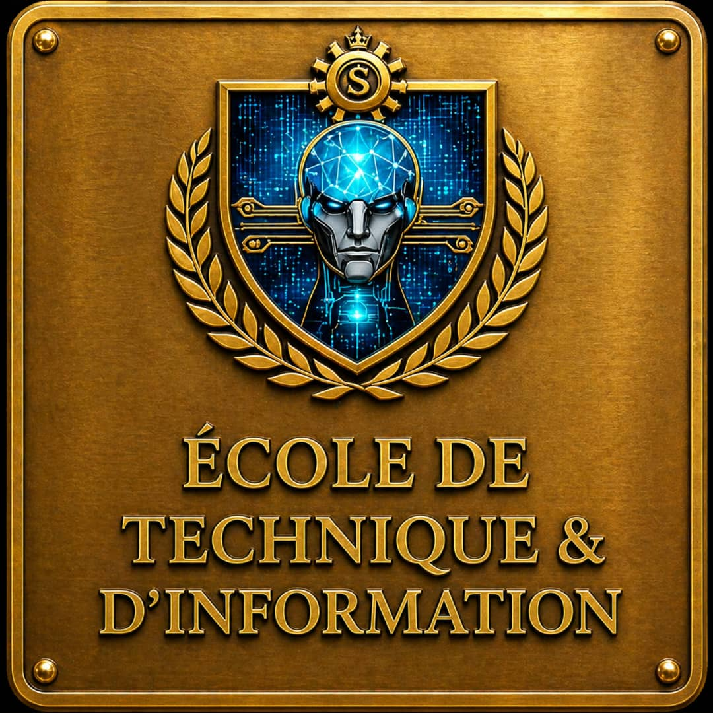

DÉCOUVREZ NOS FORMATIONS
Deux parcours, un même objectif : votre réussite
Choisissez la voie qui correspond à votre projet et ouvrez la porte de votre avenir.
4Écoles spécialisées
5Niveaux universitaires
70 %De pratique en formation
professionnelle
15 à 30Pays partenaires annoncés
PROGRAMMES UNIVERSITAIRES
Besoin d’être orienté ? →
Choisissez votre parcours
Du premier diplôme aux études doctorales, explorez nos domaines de formation.
FORMATIONS PROFESSIONNELLES
Des compétences pour agir
Des parcours pratiques organisés autour des qualifications CFP, AFP, CAP et CQF.
NOS ÉCOLES


Quatre domaines pour construire votre projet
École de Droit, Sciences & Gestion d’Administration

École des Sciences, Technologies et d’Ingénierie
École des Sciences de la Santé et du Développement

À PROPOS DE NOUS
SCIPT INTERNATIONAL
Un accompagnement pour construire votre projet de formation et envisager de nouvelles perspectives à l’international. Découvrez nos domaines et échangez avec notre équipe sur les parcours et les partenariats disponibles.
En savoir plus →OUVERTURE INTERNATIONALE
Explorez vos perspectives à travers le monde
Une mosaïque de destinations pour imaginer la suite de votre parcours.
Une ouverture sur Londres
Découvrez les perspectives d’études à l’international et renseignez-vous auprès de notre équipe sur les démarches possibles.
Élargissez vos horizons
Explorez des expériences universitaires au-delà des frontières, selon les partenariats et les parcours disponibles.
Avancez à votre rythme
Préparez votre projet de formation avec les conseils de notre équipe et les informations adaptées à votre situation.
Ouvrez de nouvelles portes
Construisez votre projet et découvrez les opportunités de mobilité à confirmer avec nos conseillers.
ADMISSIONS
Votre candidature, étape par étape
01Choisir sa formationExplorez les parcours et
précisez votre niveau d’études.
02Préparer son dossierContactez l’équipe pour
connaître les pièces demandées selon le programme.
03Échanger avec nos conseillersObtenez les
modalités d’admission et les informations sur les frais.
Prêt à rejoindre SCIPT ?
Présentez-nous votre projet de formation. Notre équipe vous répondra directement.
Nous contacter →CONTACT
Parlons de votre avenir
Une question sur un programme ou une admission ? Envoyez-nous votre demande.
Adresse
Ancienne Sobraga, derrière l’hôtel Excellence, villa 229,
Libreville, Gabon
Téléphone
(+241) 077 831 740 · 077 831 715